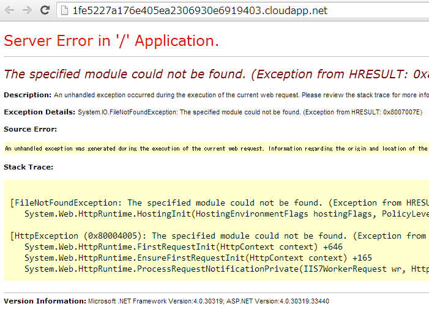
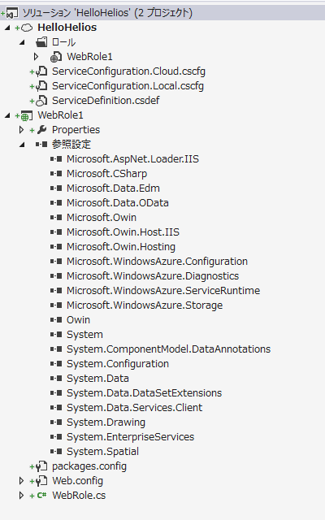
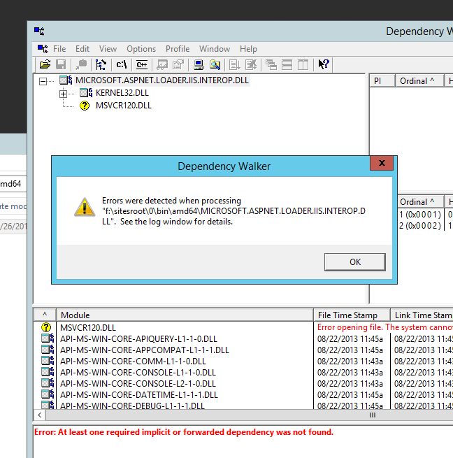
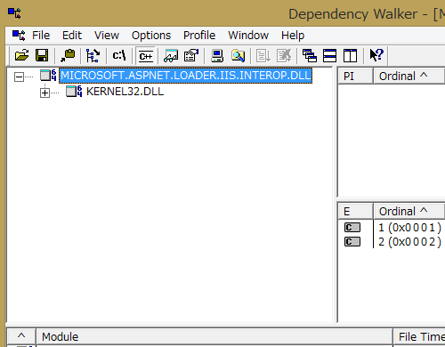

Windows Azure SDK for Ruby Release 0.6.0
Windows Azure SDK for Ruby 0.6.0 がリリースされました。2013/04/25に 0.5.0 が出て以来7ヶ月ぶりのリリースです。RubyGemsから入ります
INISTALL > gem install azure
新機能
0.6.0では、主にmanagement APIの追加とBUG修正が行われたようです。
- service management API のライブラリとして下記のものが追加されています。
- Virtual Machine
- Virtual Machine Image
- Virtual Network
- Cloud Service
- Storage
- Sql Database
- Location and Affinity Group
get_blob_properties のBUG修正
5月にPRを出した修正も取り込まれてリリースされました。これで、Blobのプロパティを取ったらBodyが付いてくるという大きな問題は解決されたことになります。
これで出すに出せなかったやつが出せるようになります。
Storage Client 2.1.0.4 以降での Cast問題の修正
Storage Client 2.0.3以前と、最新のWindows Azure Storage の組み合わせで発生していたTable Query での Cast 問題が最新(2.1.0.4, 3.0.0 2013/11/29 現在)では解決されているようです。正式なアナウンスはまだ有りませんが、必要な方は以下の検証結果を参考にしてください。

issueの再現
まずは、問題が報告されているStorage Clinet 2.1.0.3で再現することを確認します。再現コードはTable Query での Cast 問題で提示されているものを使います。
static IEnumerable<T> GetEntities<T>(CloudTable table) where T : ITableEntity, new()
{
IQueryable<T> query = table.CreateQuery<T>().Where(x => x.PartitionKey == "1");
return query.ToList();
}
nugetで、問題のあるバージョンのライブラリをインストールします:
Install-Package WindowsAzure.Storage -Version 2.1.0.3
実行結果
Table Query での Cast 問題で報告されている通り、http requestのtraceのGET URLに$filter=castの文字列が入ってしまっており、http responseのtraceでは、400 Bad Requestになっているのが確認できました。x-ms-versionは、 2012-02-12 です。
http requestのtrace:
GET http://asdpojasldfj001.table.core.windows.net/people?$filter=cast%28%27%27%29%2FPartitionKey%20eq%20%271%27&timeout=90 HTTP/1.1
User-Agent: WA-Storage/2.1.0.3 (.NET CLR 4.0.30319.34003; Win32NT 6.3.9600.0)
x-ms-version: 2012-02-12
Accept: application/atom+xml,application/xml
Accept-Charset: UTF-8
MaxDataServiceVersion: 2.0;NetFx
x-ms-client-request-id: af7cf5c3-c287-4c1f-a9fe-ee0b6c374317
x-ms-date: Fri, 29 Nov 2013 23:25:01 GMT
Authorization: SharedKey asdpojasldfj001:*********************************************
Host: asdpojasldfj001.table.core.windows.net
http responseのtrace:
HTTP/1.1 400 Bad Request
Transfer-Encoding: chunked
Content-Type: application/xml;charset=utf-8
Server: Windows-Azure-Table/1.0 Microsoft-HTTPAPI/2.0
x-ms-request-id: abf14b12-7a80-4b75-a652-604c56bdb817
x-ms-version: 2012-02-12
X-Content-Type-Options: nosniff
Date: Fri, 29 Nov 2013 23:25:01 GMT
131
<?xml version="1.0" encoding="utf-8"?><error xmlns="http://schemas.microsoft.com/ado/2007/08/dataservices/metadata"><code>InvalidInput</code><message xml:lang="en-US">One of the request inputs is not valid.
RequestId:abf14b12-7a80-4b75-a652-604c56bdb817
Time:2013-11-29T23:25:02.0389849Z</message></error>
0
2.1.0.4 での修正確認
nugetの履歴によるとnuget.org: Windows Azure Storage2013/11/27 に、2.1.0.4と、3.0.0が同時にリリースされています。同じコードをライブラリのバージョンだけ変更して実行します:
Install-Package WindowsAzure.Storage -Version 2.1.0.4
実行結果
GET URLがスッキリして、結果は 200 OK が帰ってきています。FIXされているようです。
http requestのtrace:
GET http://asdpojasldfj001.table.core.windows.net/people?$filter=PartitionKey%20eq%20%271%27&timeout=90 HTTP/1.1
User-Agent: WA-Storage/2.1.0.4 (.NET CLR 4.0.30319.34003; Win32NT 6.3.9600.0)
x-ms-version: 2012-02-12
Accept: application/atom+xml,application/xml
Accept-Charset: UTF-8
MaxDataServiceVersion: 2.0;NetFx
x-ms-client-request-id: e9319d53-b9eb-41c6-9a93-63566842984e
x-ms-date: Fri, 29 Nov 2013 23:33:17 GMT
Authorization: SharedKey asdpojasldfj001:*********************************************
Host: asdpojasldfj001.table.core.windows.net
http responseのtrace:
HTTP/1.1 200 OK
Cache-Control: no-cache
Transfer-Encoding: chunked
Content-Type: application/atom+xml;type=feed;charset=utf-8
Server: Windows-Azure-Table/1.0 Microsoft-HTTPAPI/2.0
x-ms-request-id: d1056e7a-f0ff-4ab4-b5a4-4b546eb48515
x-ms-version: 2012-02-12
X-Content-Type-Options: nosniff
Date: Fri, 29 Nov 2013 23:33:17 GMT
96A
<?xml version="1.0" encoding="utf-8"?><feed xml:base="http://asdpojasldfj001.table.core.windows.net/" xmlns="http://www.w3.org/2005/Atom" xmlns:d="http://schemas.microsoft.com/ado/2007/08/dataservices" xmlns:m="http://schemas.microsoft.com/ado/2007/08/dataservices/metadata"><id>http://asdpojasldfj001.table.core.windows.net/people</id><title type="text">people</title><updated>2013-11-29T23:33:18Z</updated><link rel="self" title="people" href="people" /><entry m:etag="W/"datetime'2013-11-28T10%3A24%3A23.5715047Z'""><id>http://asdpojasldfj001.table.core.windows.net/people(PartitionKey='1',RowKey='1')</id><category term="asdpojasldfj001.people" scheme="http://schemas.microsoft.com/ado/2007/08/dataservices/scheme" /><link rel="edit" title="people" href="people(PartitionKey='1',RowKey='1')" /><title /><updated>2013-11-29T23:33:18Z</updated><author><name /></author><content type="application/xml"><m:properties><d:PartitionKey>1</d:PartitionKey><d:RowKey>1</d:RowKey><d:Timestamp m:type="Edm.DateTime">2013-11-28T10:24:23.5715047Z</d:Timestamp><d:Data>foo</d:Data></m:properties></content></entry><entry m:etag="W/"datetime'2013-11-28T10%3A21%3A02.0298712Z'""><id>http://asdpojasldfj001.table.core.windows.net/people(PartitionKey='1',RowKey='2')</id><category term="asdpojasldfj001.people" scheme="http://schemas.microsoft.com/ado/2007/08/dataservices/scheme" /><link rel="edit" title="people" href="people(PartitionKey='1',RowKey='2')" /><title /><updated>2013-11-29T23:33:18Z</updated><author><name /></author><content type="application/xml"><m:properties><d:PartitionKey>1</d:PartitionKey><d:RowKey>2</d:RowKey><d:Timestamp m:type="Edm.DateTime">2013-11-28T10:21:02.0298712Z</d:Timestamp><d:Data>foo</d:Data></m:properties></content></entry><entry m:etag="W/"datetime'2013-11-29T23%3A16%3A04.1332012Z'""><id>http://asdpojasldfj001.table.core.windows.net/people(PartitionKey='1',RowKey='3')</id><category term="asdpojasldfj001.people" scheme="http://schemas.microsoft.com/ado/2007/08/dataservices/scheme" /><link rel="edit" title="people" href="people(PartitionKey='1',RowKey='3')" /><title /><updated>2013-11-29T23:33:18Z</updated><author><name /></author><content type="application/xml"><m:properties><d:PartitionKey>1</d:PartitionKey><d:RowKey>3</d:RowKey><d:Timestamp m:type="Edm.DateTime">2013-11-29T23:16:04.1332012Z</d:Timestamp><d:Data>foo</d:Data></m:properties></content></entry></feed>
0
おまけの 3.0.0 での修正確認
同じことを最新の 3.0.0 でやりました。バッチリ動きます。x-ms-versionが 2013-08-15になって結果がjsonになっています:
Install-Package WindowsAzure.Storage -Version 2.1.0.4
http requestのtrace:
GET http://asdpojasldfj001.table.core.windows.net/people?$filter=PartitionKey%20eq%20%271%27&timeout=90 HTTP/1.1
User-Agent: WA-Storage/3.0.0 (.NET CLR 4.0.30319.34003; Win32NT 6.3.9600.0)
x-ms-version: 2013-08-15
Accept-Charset: UTF-8
MaxDataServiceVersion: 3.0;NetFx
Accept: application/json;odata=minimalmetadata
x-ms-client-request-id: 5b6e366f-dde8-4ec0-b433-10fac62c117d
x-ms-date: Fri, 29 Nov 2013 23:17:23 GMT
Authorization: SharedKey asdpojasldfj001:*********************************************
Host: asdpojasldfj001.table.core.windows.net
http responseのtrace:
HTTP/1.1 200 OK
Cache-Control: no-cache
Transfer-Encoding: chunked
Content-Type: application/json;odata=minimalmetadata;streaming=true;charset=utf-8
Server: Windows-Azure-Table/1.0 Microsoft-HTTPAPI/2.0
x-ms-request-id: fa6db02e-b080-4bc4-8761-1016920fb1b0
x-ms-version: 2013-08-15
X-Content-Type-Options: nosniff
Date: Fri, 29 Nov 2013 23:17:22 GMT
168
{"odata.metadata":"http://asdpojasldfj001.table.core.windows.net/$metadata#people","value":[{"PartitionKey":"1","RowKey":"1","Timestamp":"2013-11-28T10:24:23.5715047Z","Data":"foo"},{"PartitionKey":"1","RowKey":"2","Timestamp":"2013-11-28T10:21:02.0298712Z","Data":"foo"},{"PartitionKey":"1","RowKey":"3","Timestamp":"2013-11-29T23:16:04.1332012Z","Data":"foo"}]}
0
ソースコード上の修正点
2.1.0.4はgithub上でコードが公開されているので、レポジトリ上の修正点を確認しましょう。
ChangeLogでは:
Issues fixed in 2.1.0.4 :
- Tables: Do not send the cast operator in the table query filter string.
microsoft-azure-api/Services/Storage/Lib/Common/Table/Queryable/ExpressionWriter.cs で、2.1でExpressionをURLに展開するときのUnaryの処理にcastを使ってしまっていたのを削除したようです。
修正のCommitは、XSCL 2.1.0.4 - Hotfixで、ソースは、ExpressionWriter.csです。
残念ながら、3.0.0は、まだコードが公開されていないので確認することができません。
まとめ
2.1.0.4/3.0.0では、Table Query での Cast 問題の問題はFIXされています。そのうちアナウンスは出ると思いますが、必要な場合は試してみてください。Windows Azure Storage Known Issues 2013/11で報告されていた幾つかの問題の中で、Cast問題はスマートに回避するのが難しいものだったので、これで解決されて助かります。これ以外のものはどちらということ利用者側のコードに問題がある場合に起きる問題な気がします。
本題とは外れますが、今回の場合では、363 byte(json) と、2,436 byte (xml)とhttp responseのbodyのサイズが大きく違い期待以上に良好な結果になっています。今回はデータが非常に小さいのでmeta 情報部分が冗長なxmlのオーバーヘッドが目立つ結果になっているのでしょうが、それにしても大きな違いです。
Windows Azure Storage Release - CORS、JSON、Minute Metrics の紹介
Windows Azure Storage Team Blogで、新しいWindows Azure Storageのリリースが紹介されています。Windows Azure Storage Release - Introducing CORS, JSON, Minute Metrics, and More
2013/11/30 翻訳が出ました。S/N RATIO BY SATO NAOKI Windows Azureストレージのリリース – CORS、JSON、分単位メトリックなど2013/12/20 Windows Azure Japan Team Blog 公式 谷訳出ました。 Windows Azure ストレージのリリース - CORS、JSON、分単位メトリックなど各種機能の導入
以下に抜粋で内容を紹介します。
3つの主要な機能
CORS (Cross Origin Resource Sharing):Windows Azure Blobs, Tables, Queues でCORS が有効できるようにになった。これによって、browser から異なったドメインのリソースへのアクセス・操作ができる。CORS は、Service Properties の 設定で有効化。詳しくはhttp://msdn.microsoft.com/en-us/library/windowsazure/dn535601.aspxを参照してください。
JSON (JavaScript Object Notation): 現在、Windows Azure Table は、OData 3.0のJSON formatをサポートしている。JSON format では、AtomPub XML payloadの冗長な部分が削減されより効率的な転送になる。
JSONは下記3つの形式でサポート
- No Metadata - これは最も効率的なformatで、クライアントがカスタムプロパティのデータ型を知っている場合に便利です
- Minimal Metadata - この形式は、暗黙的に解釈できない特定の種類のカスタムプロパティのデータ型情報が含まれている。例えば、Azure Table Browserのような、一般的なツールのように保存されているEntityのデータ型を知らないで読まなければいけない場合に便利です
- Full Metadata - このフォーマットは、 generic OData readers で読む場合に便利です
Windows Azure TableのJSONについての詳細情報はhttp://msdn.microsoft.com/en-us/library/windowsazure/dn535600.aspxを参照してださい。
Windows Azure Storage Analytics の Minute Metrics: 今まで、Windows Azure StorageのMetricsは時間集計でした。（Storage Analytics Metrics の詳細） 新しい 2013-08-15 version では、 いくつかの主要な値に付いて 5分以内に 分集計（Minute Metrics） が取得できるようになります。それに伴って下記のテーブルを追加します。
- $MetricsHourPrimaryTransactionsBlob
- $MetricsHourPrimaryTransactionsTable
- $MetricsHourPrimaryTransactionsQueue
- $MetricsMinutePrimaryTransactionsBlob
- $MetricsMinutePrimaryTransactionsTable
- $MetricsMinutePrimaryTransactionsQueue
時間集計のテーブル名が変わっているので注意してください。古いテーブルも継続して存在します。
分集計の設定は、2013-08-15 version を設定して、Set Service Properties REST APIを使います。現在 Windows Azure Portal では設定ができませんが、将来サポートされる予定です。
詳細情報は、About Storage Analytics Metricsを見てくだい。
その他の追加機能
これらの他の2013-8-15 versionでは、以下の機能を実装しています。2013-8-15 version の変更詳細のリストは：http://msdn.microsoft.com/en-us/library/windowsazure/dd894041.aspxにあります。
- Copy blob で、Shared Access Signature (SAS) を、コピー先にも適応します。（同じstorage accountの場合）
- Windows Azure Blob service は、Content-Disposition と response headers の cache-control などの ability control (via. SAS）をサポートします。Content-Disposition は、Set Blob Properties で設定します。
- Windows Azure Blob service は、Get Blob と Get Blob Propertiesで、複数の HTTP conditional header をサポートします。この機能は、web-browsers which から CDN servers 経由でアクセスする場合に有用です。
- Windows Azure Blob Service は、uncommitted blobはある状態での、Delete Blob operation をサポートします。以前は、事前にcommitしないとdelete Blob出来ませんでした。
- List Containers, List Blobs と List Queues は、2013-08-15 version から、resourceに、URL address field を含みません。 これは、clientで再構築できる fields を削減したためです。
- Lease Blob と Lease Container は、2013-08-15 version から、ETag と Last Modified Time を response headers で返します。これによって、lease holder は最後に見た時から、リソースが変更されたかどうかを簡単に確認することができます。（つまり、blob や その metadata が更新されたか)。以前と同じくblob の lease operations では、ETagは変更されません。
これらの機能に対応した、Windows Azure Storage Client Library をgithub:azure-storage-netにリリースします。数ヶ月で、Windows AzureのSDK 2.2、Windows Azure Storage Emulatorのアップデートをリリースする予定です。この更新は、2013-08-15 version の新機能をサポートします。
既知の問題が幾つかあります。下記の記事を参照してください。
http://blogs.msdn.com/b/windowsazurestorage/archive/2013/11/23/windows-azure-storage-known-issues-november-2013.aspxhttp://blogs.msdn.com/b/windowsazurestorage/archive/2013/11/23/windows-azure-storage-breaking-changes-for-windows-azure-tables-november-2013.aspx
以上
最後に
Azure Storage Client (Windows Azure Storage)は、3.0.0がリリースされています。nugetはnuget:WindowsAzure.StorageDependenciesを見ると、Microsoft.Data.OData 5.6以上になっているので、既存のコードとコンフリクトするかもしれません、要注意です。BUILD 2013で話が出てきたStorageの新機能の一部がまだ出てきていないようなので、年末に向けてさらに期待しています。負荷試験している時とかはMinute Metricsは便利ですね、嬉しいです。
Helios を Azure Cloud Service で使う
2013/12/13 追記 Microsoft.Owin.Host.IIS 0.1.1-pre では、WebRoleのStartup taskの作成 の問題は解決されました。
巷で話題のHeliosをCloud Serviceで使おうとしたらちょっとハマりました。基本的には、Checking out the Helios IIS Owin Web Server Hostと同じですが、Cloud Service、WebRoleの組み合わせでDeployしたら下記のようなエラーになります。
{kind=link}
最初、なにかアセンブリが足りないのかと思って、Fusion Logを調べたりしていたのですが、結局Helios内で使っているnavite code dllが依存しているVC12のランタイムが無かったという話でした。startup taskを用意してVC12のランタイムを入れてやると上手く動くようになります。
ここでは、Cloud Serviceの作成から、Heliosの組み込み、startup taskの作成まで一通り説明します。
手順の確認
WebRoleの作成からHeliosのインストールまで
- Cloud Service を作ってWebRoleを追加します普通にCloudServiceを作成し、WebRoleを追加します。テンプレートはEmptyにします
{kind=link}
- projectを、.NET 4.5.1 を使うようにします
{kind=link}
コンパイルして問題無いのを確認します。
System.Webの参照を全て削除します
nugetを使って、Microsoft.Owin.Host.IISをインストールします:
Install-Package Microsoft.Owin.Host.IIS -Pre
下記のような参照になります
Startup Classの設定
下記のようなStartup classのコードを追加します:
using System;
using Microsoft.Owin;
using Owin;
[assembly: OwinStartup(typeof(WebRole1.Startup))]
namespace WebRole1
{
public class Startup
{
public void Configuration(IAppBuilder app)
{
app.Run(async context => // IOWinContext
{
context.Response.StatusCode = 200;
context.Response.ContentType = "text/html";
await context.Response.WriteAsync("Hello Herios. Time is: " + DateTime.Now.ToString());
});
}
}
}
これで、WebRoleを動かしてみて、動くことを確認します。
WebRoleのStartup taskの作成
Helios 0.1.0の中で使われている、unmanaged codeがmsvcr120.dllに依存しているので、動作環境ではVC12 のランタイムが必要です。ここでは、WebRoleのstartup taskでVC12のランタイムをインストールする方法を説明します。
ServiceDefinition.csdefに下記の定義を追加します:
<?xml version="1.0" encoding="utf-8"?>
<ServiceDefinition name="HelloHelios" xmlns="http://schemas.microsoft.com/ServiceHosting/2008/10/ServiceDefinition" schemaVersion="2013-10.2.2">
<WebRole name="WebRole1" vmsize="Small">
<Startup>
<Task commandLine="startup.cmd" executionContext="elevated" taskType="simple" />
</Startup>
<Sites>
以下省略・・・・
WebRoleのプロジェクトに、startup.cmdというbatchファイルとvcredist_x64.exeを追加して、プロパティで出力ディレクトリにコピーするように設定します。
- startup.cmd::
- vcredist_x64.exe /install /quiet
vcredist_x64.exe は、Visual Studio 2013 の Visual C++ 再頒布可能パッケージからダウンロードできます。VS 2013をインストールしている場合は、C:Program Files (x86)Microsoft Visual Studio 12.0VCredist等のディレクトリにファイルがあります。
startup taskについて：Windows Azure でスタートアップ タスクを実行する
osFamilyの変更
.NET Framework 4.5.1は、Windows Server 2012R2では最初から入っています。簡単なので、osFamilyを4にして.NET Framework 4.5.1を使います。
ServiceConfiguration.(Local|Cloud).cscfgのosFamilyを3から4に変更します:
<?xml version="1.0" encoding="utf-8"?>
<ServiceConfiguration serviceName="HelloHelios" xmlns="http://schemas.microsoft.com/ServiceHosting/2008/10/ServiceConfiguration" osFamily="4" osVersion="*" schemaVersion="2013-10.2.2">
<Role name="WebRole1">
まとめ
Helios 0.1.0runtimeには、native codeのDLLが含まれている。このDLLは、VC12(VS2013)のランタイム、msvcr120.dllに依存している。msvcr120.dllは、Cloud Service のWindows 2013R2 サーバーに存在しない。vcredist_x64.exeを使うとmsvcr120.dllがインストールされて問題が解決する。この問題は、厳密に言うとMicrosoft.Owin.Host.IIS 0.1.0-preが使っている、Microsoft.AspNet.Loader.IIS 0.1.0-preに起因する。このままだとちょっと使いづらいですね。
2013/12/13 追記
2013/12/02Microsoft.Owin.Host.IIS 0.1.1-preでは、Microsoft.AspNet.Loader.IIS 0.1.1-preに含まれる。Microsoft.AspNet.Loader.IIS.Interop.dll がMSVCR120.DLLに依存しなくなりました。そのため、WebRoleのStartup taskの作成のようなことをしないでも動作します。これで普通に使えるようになりますね。
Windows Azure Storage Known Issues 2013/11
2013/11/29 以下の内容は正式な日本語訳が出ています Windows Azure ストレージの既知の問題2013/11/30 Table Query での Cast 問題 が解決されたStorage Client Libraryがリリースされています。検証記事 Storage Client 2.1.0.4 以降での Cast問題の修正
cros, json 対応などのmajor releaseの準備に伴って実装が変更されているようです。それが原因でいくつかの意図しない問題が発生していることが報告されています。以下は Windows Azure Storage の BlogWindows Azure Storage Known Issues (November 2013)からの抜粋です。これらの問題が修正されプロダクションに公開され次第 Blog の記事は更新されるということです。
Windows Azure TablesのIssue
下記の2つの既知のissueがあります。サービス側または当社のクライアント·ライブラリの一部としてhotfixを出す予定です。
- clients で、DataServiceContext.ResolveNameを定義し、<Account Name>.<Table Name>以外の型の名前を指定すると、CUD operation が 400 (Bad Request) を返します。これは、新しい実装では、ATOM の “Category” element の term 属性が、<Account Name>.<Table Name> と同じで無ければいけないのが原因です。以前のバージョン（実装）では、送信された型の名前は無視していました。これは再び無視するように修正される予定ですが、それまでの間は次の回避策を検討してください。ResolveName の設定は、Azure Tables では必要無いのでclient application のから外してください。そうすると OData の “category” element は送信されません。
下記は問題が発生するコードの例です。これを実行するとサーバー側で失敗します。
CloudTableClient cloudTableClient = storageAccount.CreateCloudTableClient();
TableServiceContext tableServiceContext = cloudTableClient.GetDataServiceContext();
tableServiceContext.ResolveName = delegate(Type entityType)
{
// This would cause class name to be sent as the value for term in the category element and service would return Bad Request.
return entityType.FullName;
};
SimpleEntity entity = new SimpleEntity("somePK", "someRK");
tableServiceContext.AddObject("sometable", entity);
tableServiceContext.SaveChanges();
この Issue の解決のためには client 側でtableServiceContext.ResolveNamedelegate の設定を外してください。
- service updateの一環として、サーバー側で使っている新しい .NET WCF Data Services library は、$filter query の 一部に empty “cast” があると 400 (Bad Request) で拒否します。古い .NET framework libraryではそうではありませんでした。これによって、Windows Azure Storage Client Library 2.1のIQueryable implementationに影響が出ます。.NET の DataServiceContext の挙動を、cast を送信しないようにクライアントライブラリを修正中です。これは、数週間以内に利用できるようになります( this should be available in the next couple of weeks )それまでの間次の回避策を検討してください。このクライアントライブラリの問題では、IEnumerable<T> で ITableEntityインターフェイスに制約するのでは無く、インスタンス化される型を明示的に使うことで回避できます。
下記は問題があるコードです
static IEnumerable<T> GetEntities<T>(CloudTable table) where T : ITableEntity, new()
{
IQueryable<T> query = table.CreateQuery<T>().Where(x => x.PartitionKey == "mypk");
return query.ToList();
}
このように書くと 2.1 storage client library の IQueryable interface は、下記のUriに展開されて新しい service updateでは、400 (Bad Request) で拒否されます
http://myaccount.table.core.windows.net/invalidfiltertable?$filter=cast%28%27%27%29%2FPartitionKey%20eq%20%27mypk%27&timeout=90
コードを下記のように変更してquery の castを取り除いてください。そうすれば、cast operator は送信されません
IQueryable<SimpleEntity> query = table.CreateQuery<SimpleEntity>().Where(x => x.PartitionKey == "mypk");
return query.ToList();
Uri request は下記のようになり、service に受け付けられます
http://myaccount.table.core.windows.net/validfiltertable?$filter=PartitionKey%20eq%20%27mypk%27&timeout=90
We apologize for these issues and we are working on a hotfix to address them. (我々はこれらの問題について謝罪し、我々はそれらに対処するための修正プログラムに取り組んでいます)
感想、コメント等
- 最後の Uriに cast operatorが出てしまって、それがあるとサーバーではねられて 400 (Bad Request) というのは嵌りそうです。回避策もなかなか厳しい気がします。
- コンテナの前が//になってるとSASが効かないっていうのは、自前でUriを作成していると起きそうな気がします。要注意ですね。
- ResolveName の件は、DataServiceContextにあって、TableServiceContextでは動作に関係しないものという混乱の原因になりがちなやつです。元々意味無かったはずなので、外せば良いと思います。